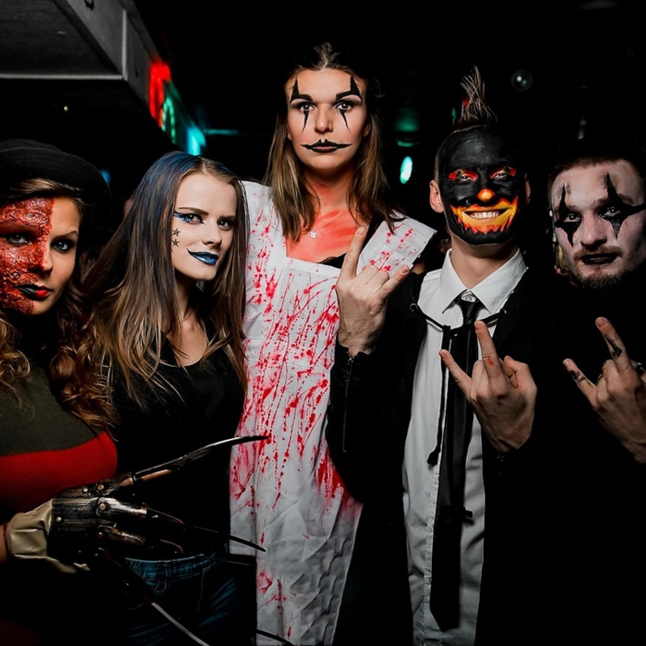

Věděli jste, že Halloween je jediný den v roce, kdy je společensky přijatelné chodit po ulici jako zombie, upír nebo oživlá dýně a ještě za to dostanete bonbóny? Ale pozor – letos to vezmeme na úplně novou úroveň!
Ať už plánujete dětskou party, tematický večírek pro dospělé, nebo jen chcete sousedům ukázat, že letos to s převlekem fakt myslíte vážně, nesmí chybět jedna zásadní věc: facepainting od Ksychtíkovo. Protože proč být obyčejný duch, když můžete být extrémně realistický duch s krvavým šrámem přes půlku čela, že si i vlastní pes bude dvakrát ověřovat, jestli jste to vy?
Co všechno zvládneme?
Krátká odpověď? Skoro všechno. Dlouhá odpověď? Tak pojďme:
- Zombie, co by obstála i ve Walking Dead.
- Upíří tvář, že by Dracula žárlil.
- Čarodějnice – od roztomilých po „pančelku z matiky“ stylem děsivosti.
- Dýně s úsměvem… nebo bez hlavy.
- Sugar Skull (mexické Día de los Muertos)? Jistě! Třpytky, barvy, drama!
- Démoni, duchové, netopýři i stylové kočky. (A nebo netopýří kočka. Kdo ví!)
Nejde jen o líčení, ale o zážitek. Každé líčení dělám s radostí, zápalem a trochou třpytivého šílenství – přesně tak, aby výsledek stál za fotku, video i jízdu tramvají, při které se vedle vás nikdo neodváží sednout. (To je výhoda, ne?)
Pro koho je to ideální?
Halloween facepainting si užijí:
- Děti – protože být Elsa je fajn, ale být Elsa po kousnutí vlkodlakem? Top!
- Dospělí – firemní večírek s pár upíry a zombiemi má úplně jinou atmosféru. (A HR oddělení to přežije.)
- Rodiny – rodinné focení, na kterém se všichni smějí… nebo aspoň děsivě šklebí.
- Influenceři a fotografové – originální content zaručen!
Na co se připravit?
Trochu barvy, trochu trpělivosti (někdy i smíchu při malování vousaté čarodějnice) a hlavně spoustu zábavy. Používám pouze profesionální, dermatologicky testované barvy, takže i ty nejcitlivější tvářičky (dětské i dospělácké) jsou v bezpečí.
A proč právě Ksychtíkovo?
Protože:
- ✅ mám zkušenosti z desítek akcí, festivalů a party
- ✅ jsem rychlá, pečlivá a trochu bláznivá (v dobrém slova smyslu!)
- ✅ tvořím motivy na přání – žádné „šablonové strašidlo“
- ✅ přijedu na místo, přinesu si vlastní vybavení a úsměv
- ✅ vypadá to fakt dobře – až moc dobře, řekla bych
Takže... jdeš do toho?
Čas Halloweenu se blíží a mé štětce už netrpělivě poskakují v kufříku. Potřebujete nápady? Podívejte se na
https://www.rd.com/list/8-halloween-face-painting-ideas/
, kde najdete spoustu inspirace pro různé úrovně obtížnosti. Zarezervuj si termín včas, ať se pak nemusíš líčit kávou a moukou doma (i když... respekt, jestli to zvládneš).
Zavolej: +420 728 500 091
Napiš: podmolovam@gmail.com
Nebo rovnou koukni na www.ksychtikovo.cz
A pamatuj: když už být strašidlo, tak stylově s Ksychtíkovo!